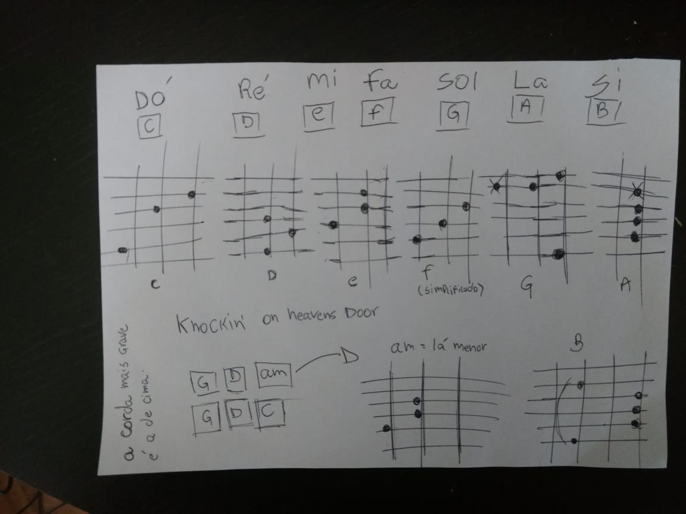
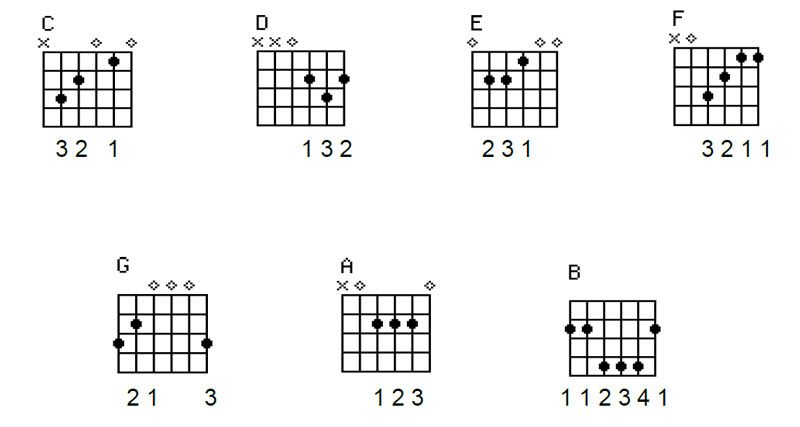

Início
A pessoa que participou já tinha alguma noção de violão, apesar disso não conhecia os acordes básicos e não tinha muita prática com o instrumento.
Comecei demonstrando os 07 acordes na forma mais básica, como a pessoa tinha dificuldades em fazer acordes com pestana demonstrei uma forma mais simplificada do Fá, enquanto ele praticava desenhei os acordes.
Os Acordes
 A música
Depois disso ensinei a música Knockin' on Heavens Door do Bob Dylan, porque tem poucos acordes, um ritmo relativamente fácil e não há nenhum acorde com pestana